In the previous blog, we explored the MI300x architecture in detail. Be sure to read up on it before starting this blog. Once you're familiar with the architecture, it makes sense to start with some simple kernels. In my case, I prefer using a DSL like triton to write kernels. Writing kernels in triton is all about writing layouts.
In this blog, we'll explore different types of layouts and how they affect the way data is organized and accessed in GPU memory.
What exactly are layouts?
I like to think of layouts as a way to describe how data is distributed across threads.
Let's say our program loads a vector of 512 values. The workgroup has 256 threads. Where do those 512 values go?
This is exactly what a layout does. Given a wave, a lane in that wave, and a value slot within that lane, which tensor element does it own?
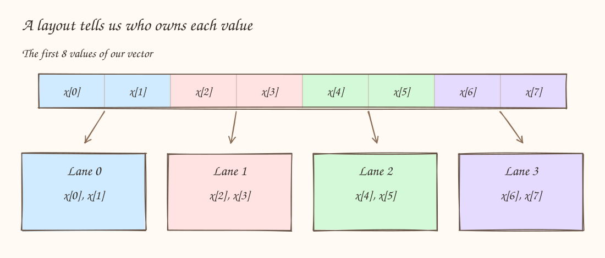
In this example, lane 0 holds x[0] and x[1], lane 1 holds x[2] and x[3], and so on. When we write y = x + 1, each thread adds 1 to the values it holds.
Wait, what about the memory layout?
A tensor's strides tell us how to find an element in memory. For a row-major matrix with 32 columns, x[row, col] is at element offset row * 32 + col from its base pointer.
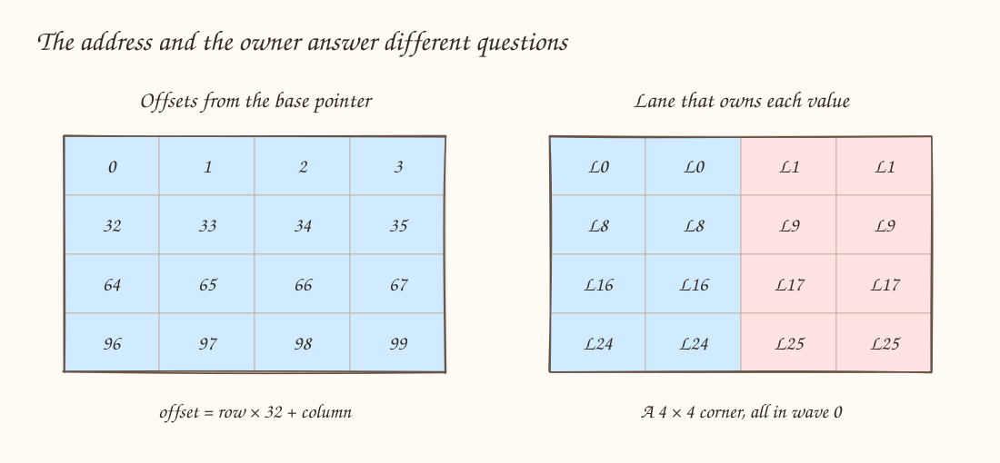
The drawing on the left tells you which address to load while the right drawing poses which thread holds the result.
Blocked layouts
Let's start with the most fundamental layout, the BlockedLayout. Here is a layout for a vector of 256 values:
from triton.experimental import gluon
from triton.experimental.gluon import language as gl
layout: gl.constexpr = gl.BlockedLayout(
size_per_thread=[1],
threads_per_warp=[64],
warps_per_cta=[4],
order=[0],
)
offsets = gl.arange(0, 256, layout=layout)What do the four fields mean?
| Field | Meaning | Our vector |
|---|---|---|
size_per_thread | how many elements does each thread own? | 1 value |
threads_per_warp | how many threads are in each wave? | 64 along the vector |
warps_per_cta | how many waves are in each block? | 4 along the vector |
order | the major ordering | only dimension 0 exists |
Putting together what we know, this means one value per thread, 64 threads per wave, and four waves gives us 1 × 64 × 4 = 256 values. This matches the vector's shape exactly.
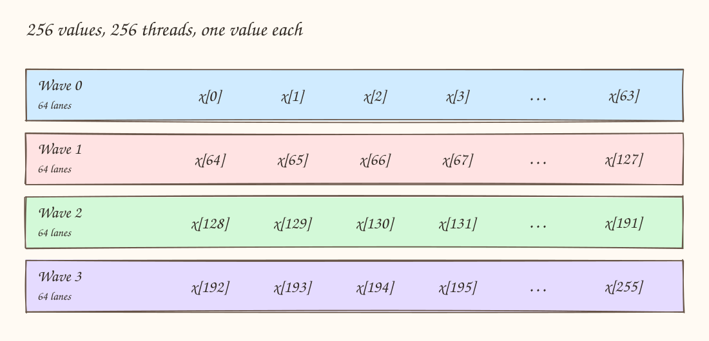
Wave 0 owns indices 0–63. Wave 1 owns 64–127, and so on.
Give each thread two values
Now change size_per_thread to [2] and use a vector of 512 values. The other fields stay the same.
layout: gl.constexpr = gl.BlockedLayout(
size_per_thread=[2],
threads_per_warp=[64],
warps_per_cta=[4],
order=[0],
)
offsets = gl.arange(0, 512, layout=layout)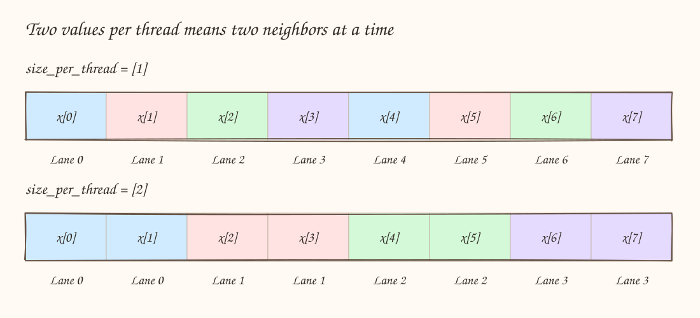
Lane 0 owns 0 and 1, lane 1 owns 2 and 3, and lane 63 owns 126 and 127. Wave 1 starts at 128. The first index for a thread is now (wave * 64 + lane) * 2, followed by its neighboring value.
We still have 256 threads. Each thread now holds two logical values in this tensor. A larger per thread tile can make it possible to issue wider memory operations, but alignment, strides, datatype, and the compiler's choices still matter.
What if our tensor is larger than this pattern?
Okay, so far we have only been thinking about the ideal scenario. We haven't considered what happens when the tensor is larger than the base pattern.
Let's go back to size_per_thread=[1], 64 lanes per wave, and four waves. That gives us 256 threads. If our vector has 256 elements, each thread holds one: thread 0 gets x[0], thread 1 gets x[1], all the way up to thread 255 getting x[255].
Now keep the same layout and make the vector longer -
layout: gl.constexpr = gl.BlockedLayout([1], [64], [4], [0])
offsets = gl.arange(0, 1024, layout=layout)We have 1,024 positions to distribute across those same 256 threads. Guess what happens here? Yes! The pattern repeats after every block, basically after every 256 elements.Split the vector into four chunks of 256.
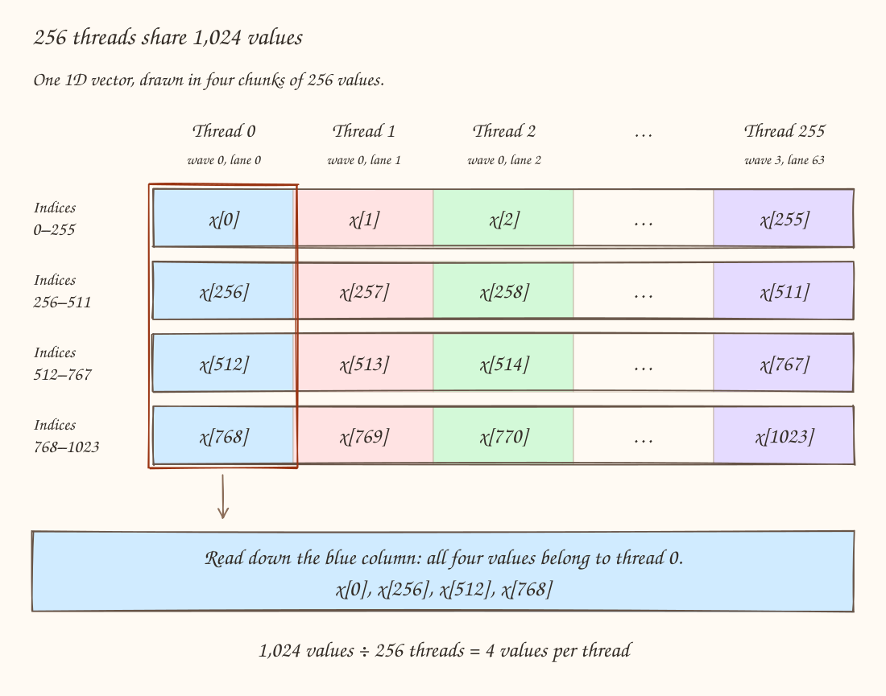
Read down the blue column. Thread 0 is wave 0, lane 0. It gets the first value from each chunk: x[0], x[256], x[512], and x[768]. Thread 1 gets the next value in each chunk: x[1], x[257], x[513], and x[769].
Every thread now holds four values. The same assignment repeats at offsets 0, 256, 512, and 768.
Extend this idea to a matrix
Now let's look at a tensor of shape [16, 32]. We will use this layout something like this -
parent: gl.constexpr = gl.BlockedLayout(
size_per_thread=[1, 2],
threads_per_warp=[8, 8],
warps_per_cta=[2, 2],
order=[1, 0],
)Each pair now refers to [rows, columns]. So [1, 2] means one row and two columns per thread. The 64 lanes in a wave are arranged as an 8 × 8 grid of these patches. Then four waves are arranged as a 2 × 2 grid of wave tiles.
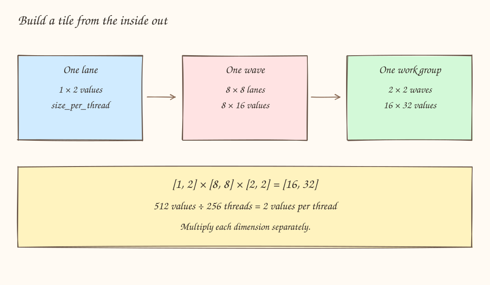
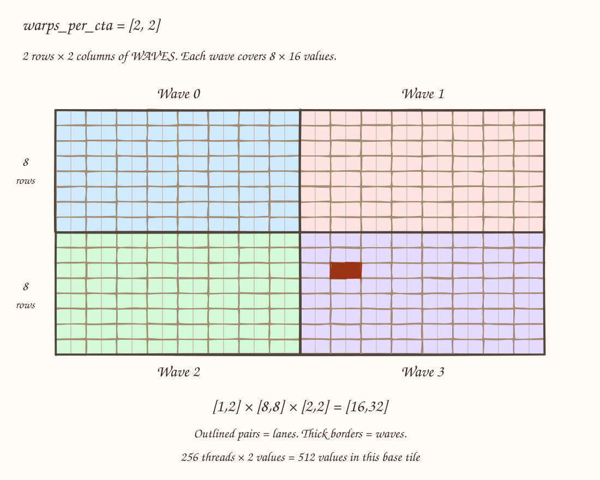
What is order=[1, 0] doing?
[1, 0] is the good ol' row-major ordering. In the 8 × 8 lane grid, lane 0 is followed by lane 1 to its right. After eight lane patches, we move to the next row of patches.
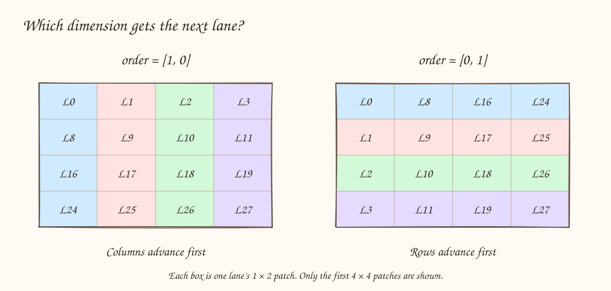
Why do we need to pay attention to the layouts?
Let's consider a simple copy kernel where one workgroup copies a contiguous, row-major 64 × 64 tile of FP32 values. We use four waves of 64 lanes. The element offset is always row * 64 + col where each value occupies 4 bytes.
@gluon.jit
def copy_tile(src, dst, layout: gl.constexpr):
rows = gl.arange(0, 64, layout=gl.SliceLayout(1, layout))
cols = gl.arange(0, 64, layout=gl.SliceLayout(0, layout))
offsets = rows[:, None] * 64 + cols[None, :]
gl.store(dst + offsets, gl.load(src + offsets))Now let's compile the same kernel but using two diffent layouts -
coalesced = gl.BlockedLayout(
size_per_thread=[1, 1],
threads_per_warp=[1, 64],
warps_per_cta=[4, 1],
order=[1, 0],
)
uncoalesced = gl.BlockedLayout(
size_per_thread=[1, 1],
threads_per_warp=[64, 1],
warps_per_cta=[1, 4],
order=[0, 1],
)Although the layouts look quite similar, they have completely different ways of mapping the data. In the first layout, lanes run across columns and the four waves start on different rows. In the second, lanes run down rows and the waves start on different columns.
Let's focus on wave 0's first load -
- Across columns (contiguous) - lane 0 loads
src[0,0], lane 1 loadssrc[0,1], and so on. Their byte offsets are 0, 4, 8, …, 252. - Down rows (non contiguous) - lane 0 loads
src[0,0], lane 1 loadssrc[1,0], and so on. Their byte offsets are 0, 256, 512, …, 16,128.
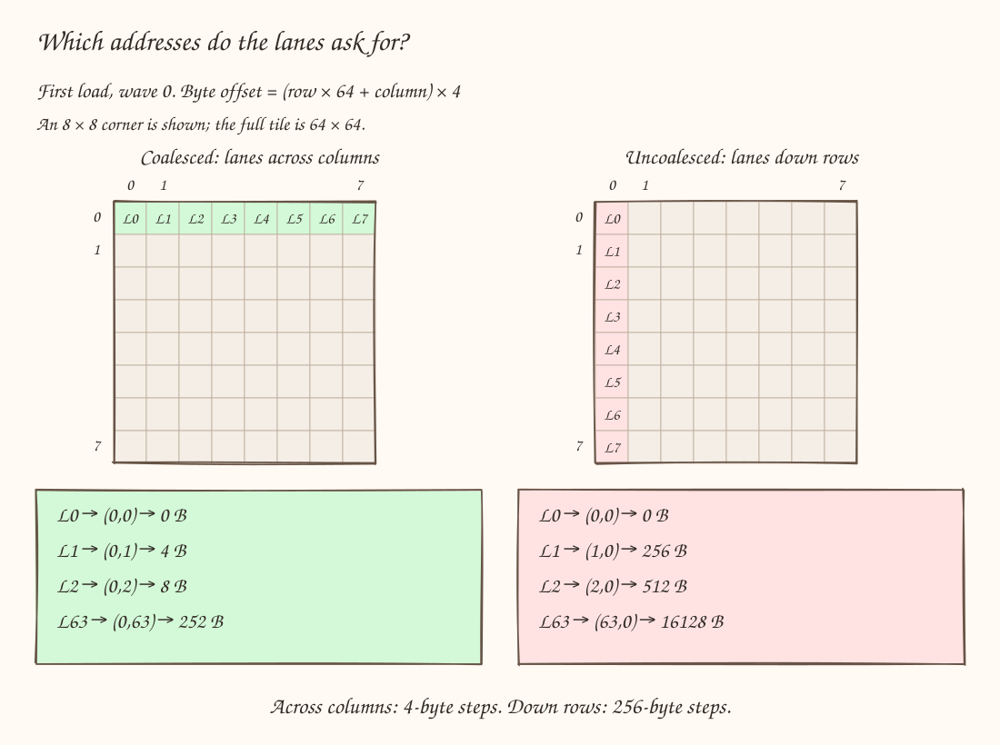
Do you see the problem now? Take a look at the assembly generated for the two layouts for the same kernel for the first load.
Coalesced layout
global_load_dword v13, v0, s[2:3]
global_store_dword v0, v13, s[4:5]
Uncoalesced layout
global_load_dword v1, v0, s[2:3]
global_store_dword v0, v1, s[4:5]Both layouts use the same load and store instructions. To see the difference, look at the instructions that calculate v0 before the load.
In the coalesced layout, the lane is multiplied by 4 to get the next byte offset.
v_and_or_b32 v0, v0, 63, s0 ; v0 = lane ID in wave 0
v_lshlrev_b32_e32 v0, 2, v0 ; v0 = lane ID × 4In the uncoalesced layout, there is an extra left shift by 6, which multiplies by 64.
v_lshlrev_b32_e32 v0, 6, v0 ; multiply by 64
v_lshlrev_b32_e32 v0, 2, v0 ; multiply by 4 againSo the first load sees these byte offsets in v0:
| Lane | Coalesced byte offset | Uncoalesced byte offset |
|---|---|---|
| 0 | 0 | 0 |
| 1 | 4 | 256 |
| 2 | 8 | 512 |
| 3 | 12 | 768 |
The offsets 0, 4, 8, and 12 all fit inside the same block and the GPU can group those requests, but for the uncoalesced layout, the offsets 0, 256, 512, and 768 lie in four different blocks and they need separate block accesses.
Linear layouts
With BlockedLayout, we usually describe a pattern of how many values each thread owns, how the lanes are arranged, and how the waves fit together.
A DistributedLinearLayout gives us another way to describe that ownership. We write down what each bit of the slot, lane, and wave IDs contributes to the tensor coordinate. These contributions are called basis entries. Selecting and combining them gives us the coordinate of a value held by a thread.
First, make the IDs concrete
Take a vector of 512 values, with four waves, 64 lanes per wave, and two consecutive values per thread. Within each thread, we label its two values slot 0 and slot 1. Here, a slot identifies one of a thread's values.
Each ID needs enough bits to represent its possible values. Slot IDs are 0 or 1, so they need one bit. Lane IDs run from 0 to 63, so they need six bits. Wave IDs run from 0 to 3, so they need two bits.
Here are example IDs from those ranges, written in decimal and binary:
| Input | Decimal value | Full binary representation |
|---|---|---|
| Slot ID: 1 bit | 1 | 1 |
| Lane ID: 6 bits | 5 | 000101 |
| Wave ID: 2 bits | 2 | 10 |
For example, here is lane 5 with every bit shown:
bit position b5 b4 b3 b2 b1 b0 place value 32 16 8 4 2 1 lane 5 0 0 0 1 0 1 5 = 0*32 + 0*16 + 0*8 + 1*4 + 0*2 + 1*1
So lane 5 has a 1 in positions b2 and b0.
Derive the bases from our blocked layout
Now let's find out what those bits contribute to a tensor index. Here is our 512-value assignment written with BlockedLayout:
blocked: gl.constexpr = gl.BlockedLayout(
size_per_thread=[2],
threads_per_warp=[64],
warps_per_cta=[4],
order=[0],
)There is only one tensor dimension, so order=[0] just names that dimension. Within wave 0, lane 0 holds x[0] and x[1], lane 1 holds x[2] and x[3], and lane 2 holds x[4] and x[5]. Each wave covers 64 * 2 = 128 values. Wave 1 therefore starts at x[128], wave 2 at x[256], and wave 3 at x[384].
For this assignment, we can calculate the index held by a wave, lane, and slot using:
index = wave_id * 128 + lane_id * 2 + slot_id wave 0, lane 0, slot 0: 0*128 + 0*2 + 0 = 0 wave 0, lane 0, slot 1: 0*128 + 0*2 + 1 = 1 wave 0, lane 1, slot 0: 0*128 + 1*2 + 0 = 2 wave 1, lane 0, slot 0: 1*128 + 0*2 + 0 = 128
A linear layout describes this same ownership by recording what happens for each single set input bit. To construct its lists, set all IDs to 0, then try one input ID at a time with the values 1, 2, 4, 8, and so on. Each of those numbers has exactly one bit set.
| Input varied; other IDs stay 0 | Try these IDs, each with one bit set | Indices from the formula |
|---|---|---|
| Slot | 1 | 1 |
| Lane | 1, 2, 4, 8, 16, 32 | 2, 4, 8, 16, 32, 64 |
| Wave | 1, 2 | 128, 256 |
Those resulting indices are our basis entries: the contribution of each input bit when it alone is 1. For an ID with several 1 bits, we select the corresponding entries and combine them with XOR.
Now we can write the equivalent linear layout:
linear: gl.constexpr = gl.DistributedLinearLayout(
reg_bases=[[1]],
lane_bases=[[2], [4], [8], [16], [32], [64]],
warp_bases=[[128], [256]],
block_bases=[],
shape=[512],
)We've now described the same 512-value assignment using explicit bases. We'll explore more of what linear layouts can do in a future post. Next, let's look at how layouts arrange values in shared memory.
Shared memory layouts
So far, we've talked about which threads hold values. Now we need to describe a tile placed in shared memory. This is a special case because of a phenomenon called bank conflicts.
What are bank conflicts?
Think of LDS as several banks that can serve requests in parallel. MI300X has 32 banks, each 4 bytes wide. Consecutive 4-byte words go to consecutive banks - word 0 goes to bank 0, word 1 to bank 1, and so on. After word 31, we wrap back around where word 32 goes to bank 0 again. This is the bank mapping - bank = (byte_address // 4) % 32.
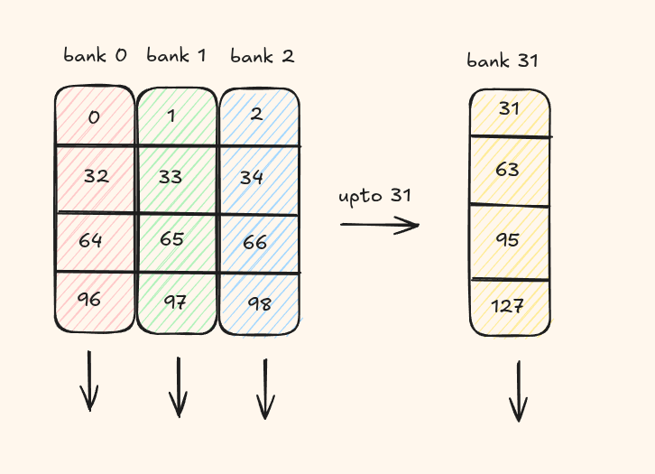
Now suppose thread 0 reads word 0 while thread 1 reads word 64. They want different words, but 0 % 32 = 0 and 64 % 32 = 0, so both requests go to bank 0. When serviced in the same access phase, they compete for that bank and need separate service. That's the two-way bank conflict shown below. Reading word 0 and word 1 instead would use two different banks.
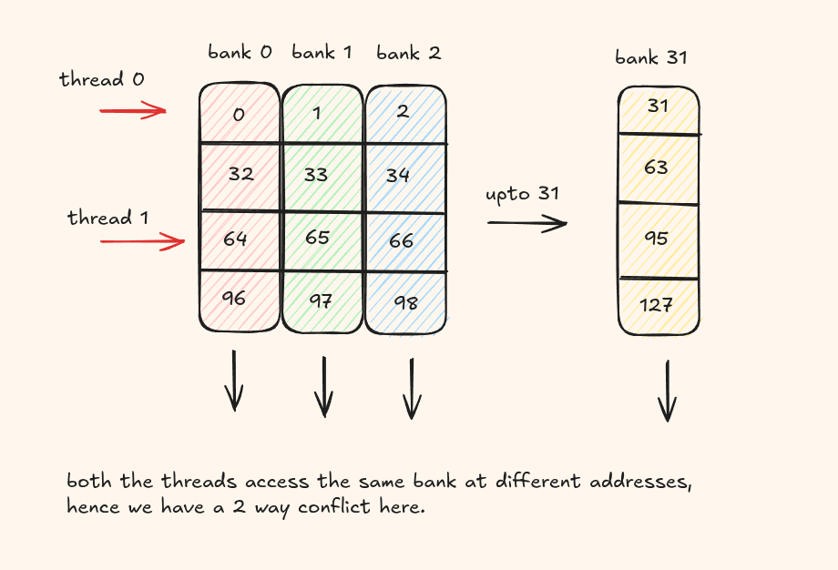
This should motivate you enough for the need for a layout which is able to handle conflicts like these
Swizzled shared layout
Swizzling means storing the same tensor values in a rearranged order in shared memory. For example, a group of values that would normally occupy positions 0–7 in a row might be placed in positions 8–15. This changes which banks those values use but keep in mind, the logical value for the element never changes.
Here's an example for a SwizzledSharedLayout.
shared_a: gl.constexpr = gl.SwizzledSharedLayout(
vec=1, per_phase=1, max_phase=1, order=[1, 0],
)
shared_b: gl.constexpr = gl.SwizzledSharedLayout(
vec=1, per_phase=1, max_phase=1, order=[0, 1],
)vec denotes how many consecutive elements move together
vec=1 treats each element as its own group. With vec=8, each group contains eight consecutive elements along the fast dimension. In A, group 0 contains K indices 0–7, group 1 contains 8–15, and so on. Swizzling changes a group's position while keeping its eight elements together and in order.
per_phase denotes how many rows share the same rearrangement
With per_phase=2, rows 0 and 1 use one pattern, rows 2 and 3 use the next, and so on.
max_phase denotes how many patterns do we cycle through
For example max_phase=8 gives phase numbers 0 through 7, then repeats from 0. For A with per_phase=2 and max_phase=8-
A rows 0–1 2–3 4–5 6–7 8–9 10–11 12–13 14–15 16–17 phase 0 1 2 3 4 5 6 7 0
Let's use groups of eight, two positions per phase, and eight phases:
shared_a: gl.constexpr = gl.SwizzledSharedLayout(
vec=8, per_phase=2, max_phase=8, order=[1, 0],
)
shared_b: gl.constexpr = gl.SwizzledSharedLayout(
vec=8, per_phase=2, max_phase=8, order=[0, 1],
)Let's look at row 2 of A, and only its first 16 values. With vec=8, we keep these values in two groups:
- The first group contains
A[2,0]throughA[2,7]. - The second contains
A[2,8]throughA[2,15].
per_phase=2 means two rows share each phase: rows 0 and 1 use phase 0; rows 2 and 3 use phase 1. Both 2 // 2 and 3 // 2 give 1. So rows 2 and 3 get the same arrangement.
SwizzledSharedLayout defines the rule new_group_position = group_number XOR phase. This XOR rule is what shuffles the groups. If you number the two groups 0 and 1. At phase 1:
- Group 0 goes to group position
0 XOR 1 = 1. - Group 1 goes to group position
1 XOR 1 = 0.
Voila! This is why the two groups swap places but keeping the 8 vector group together.
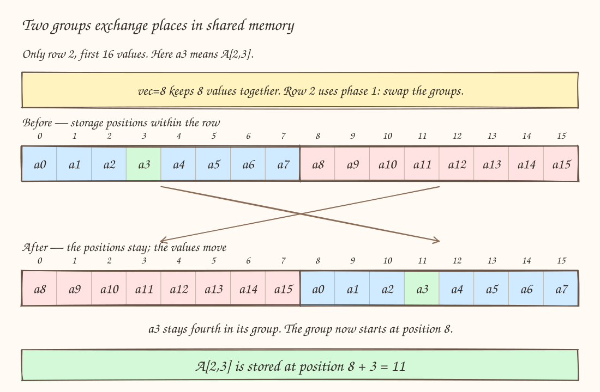
Follow the highlighted A[2,3]. It has position 3 inside its group (the fourth value). Before the swap, its group starts at storage position 0, so it sits at 0 + 3 = 3. After the swap, the group starts at position 8, so it sits at 8 + 3 = 11.
The value is still A[2,3]. Position 11 is where we store it inside this LDS row. A load using the same shared layout knows to retrieve it from there.
This shift moves them to different banks ultimately helping us avoid bank conflicts.
Padded layout
Another layout that helps you avoid bank conflicts by adding padding in between the elements is called the PaddedSharedLayout.
Consider a 256 × 64 tile of A with this shared-memory layout -
shared_a: gl.constexpr = gl.PaddedSharedLayout(
interval_padding_pairs=[[512, 16]],
offset_bases=[
[0, 1], [0, 2], [0, 4], [0, 8], [0, 16], [0, 32],
[16, 0], [32, 0], [64, 0],
[1, 0], [2, 0], [4, 0], [8, 0], [128, 0],
],
cga_layout=[],
shape=[256, 64],
)What does [[512,16]] mean?
After every 512 element positions, insert 16 padding elements.
Imagine lining up all the data values before inserting any gaps. Our tile has 256 * 64 = 16,384 values, so it has 16,384 data slots, numbered 0 through 16,383. Let's call them slot number q. It's just a way to reference the data position not a matrix row number or a byte address.
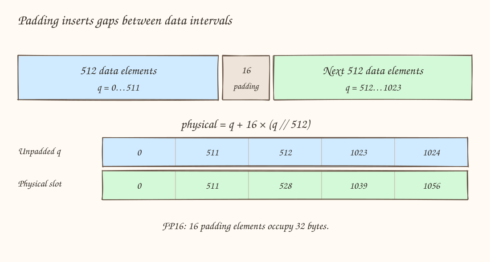
If an element's storage offset is q, its physical element offset after padding 16 elements is nowq + 16 * (q // 512). Offset 511 stays 511. Offset 512 becomes 528 because it skips the first 16-element gap. Offset 1,024 becomes 1,056 because it skips two gaps.
Padding seems like a very easy way to change the bank alignment but it comes at a cost of using extra LDS capacity. This is usually a tradeoff you need to make.
What are those offset bases?
We represent the slots by combining entries. Each entry corresponds to one bit of the slot number q.
Our list has 14 entries. Each can be selected or skipped, giving 2¹⁴ = 16,384 combinations: one for every data slot. A 1 bit selects its entry; a 0 bit skips it. Entry 0 belongs to bit b0, entry 1 to b1, and so on.
Each selected entry contributes a [row, column] pair. Start at [0,0] and combine the selected entries using XOR, separately for the row and column. For example:
| Slot q | Entries selected | Result |
|---|---|---|
| 0 | None | A[0,0] |
| 1 | [0,1] | A[0,1] |
| 3 = 2 + 1 | [0,2], [0,1] | A[0,3] |
| 65 = 64 + 1 | [16,0], [0,1] | A[16,1] |
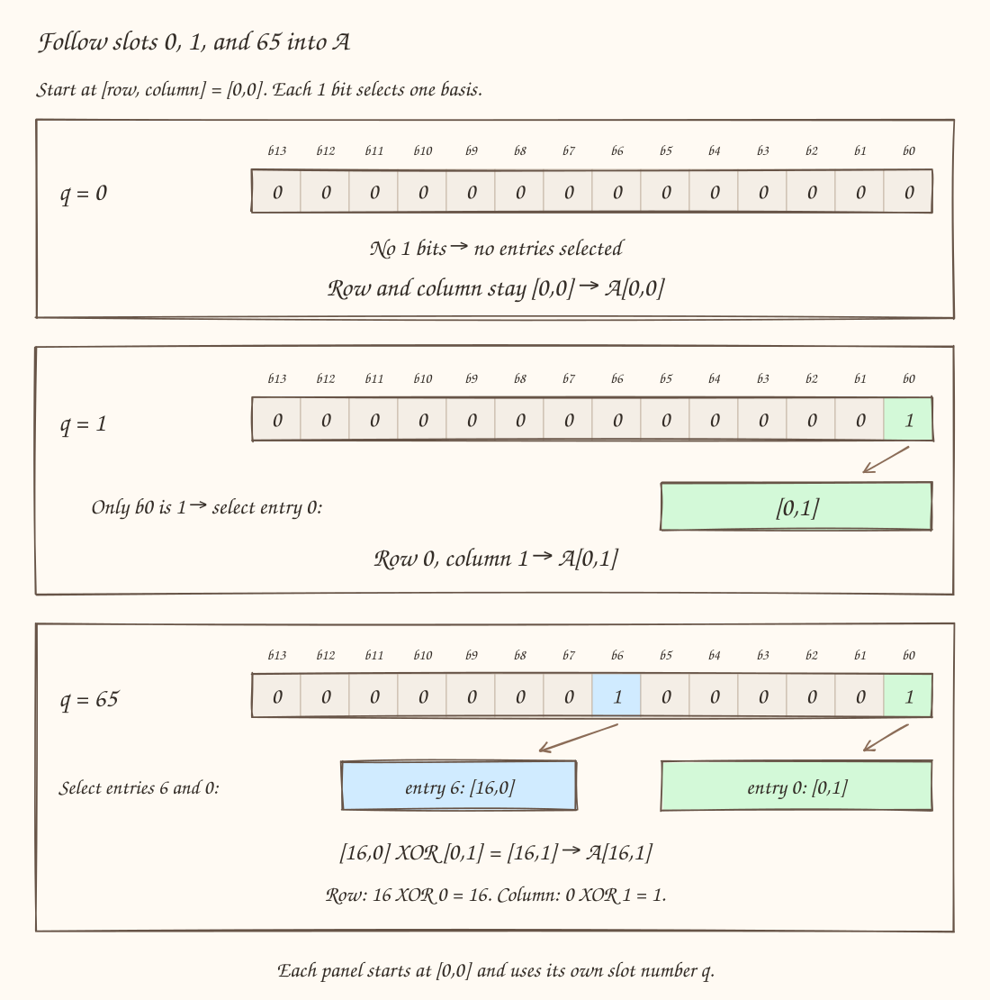
Do all the 14 offset bases cover the whole matrix?
- Yes! the six column entries combine to produce every column from 0–63.
- and the eight row entries combine to produce every row from 0–255.
Together, that gives 64 columns × 256 rows = 16,384 coordinates.
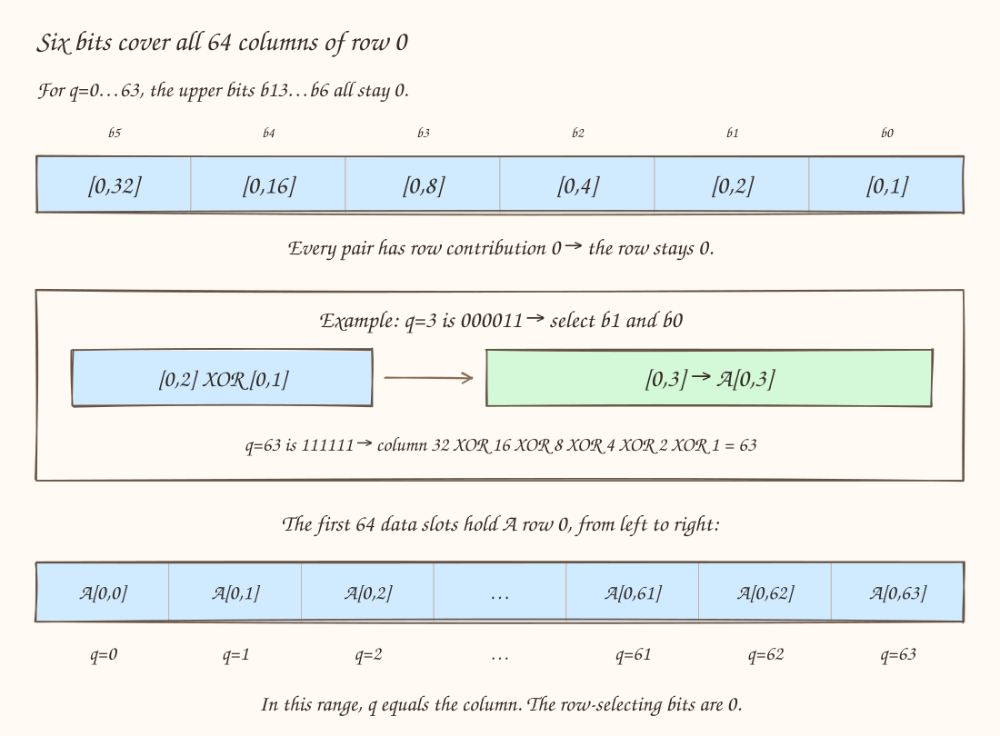
That is a good place to stop for this blog. We've covered the main layouts you would usually come across in triton kernels and their usage.. It's okay if you still need to draw a few boxes and work through the bits by hand. This indeed is a complex topic and took me a while to internalize it.
From the next few blogs, we'll get more hands-on and start using these layouts in kernels.